Autenticacao
ObrigatorioApos cadastro ou login, o cliente .NET MAUI salva o token e envia Authorization: Bearer nas rotas protegidas. Em caso de 401, a sessao local deve ser limpa.
UNIVERSIDADE PAULISTA – UNIP EaD
Projeto Integrado Multidisciplinar
Curso Superior de Tecnologia em
Análise e Desenvolvimento de Sistemas
PAQUETA’S STREAMING
BRASILIA
2026
Este trabalho apresenta o desenvolvimento de um sistema de streaming de conteudo multimidia, composto por uma Web API em ASP.NET Core, uma interface .NET MAUI em C# para criadores de conteudo e um aplicativo Android desenvolvido em Java para o usuario final. O sistema foi estruturado para permitir cadastro e autenticacao de usuarios com token JWT, cadastro de criadores, upload de videos, musicas e podcasts, organizacao de playlists e reproducao de conteudos por meio de endpoints preparados para streaming. A proposta atende ao tema do PIM VIII ao integrar conceitos de Programacao Orientada a Objetos II, Desenvolvimento de Software para a Internet e Topicos Especiais de Programacao Orientada a Objetos. No backend, foram implementadas entidades, DTOs, controllers, repositorios e persistencia com Entity Framework Core e SQLite. Na interface .NET MAUI, foram organizadas telas para operacoes administrativas e de criadores de conteudo. No aplicativo Android, foram implementadas telas de login, catalogo, player, playlists e interacoes sociais por comentarios e curtidas, preservando a experiencia de consumo do usuario final. O projeto tambem contempla evidencias visuais, organizacao academica conforme o manual do PIM e referencias do repositorio GitHub.
Palavras-chave: Streaming. ASP.NET Core. .NET MAUI. Android Java. Web API. JWT.
This work presents the development of a multimedia streaming system composed of an ASP.NET Core Web API, a C# .NET MAUI interface for content creators, and an Android application developed in Java for end users. The system was designed to support user registration and JWT authentication, creator management, upload of videos, songs and podcasts, playlist organization, and media playback through streaming-oriented endpoints. The proposal addresses the PIM VIII theme by integrating concepts from Object-Oriented Programming II, Internet Software Development, and Special Topics in Object-Oriented Programming. In the backend, entities, DTOs, controllers, repositories, and persistence with Entity Framework Core and SQLite were implemented. The .NET MAUI interface provides screens for administrative and creator operations. The Android application provides login, catalog, player, playlists, and social interactions through comments and likes, preserving the final user's media consumption experience. The project also includes visual evidence, academic organization according to the PIM manual, and GitHub repository references.
Keywords: Streaming. ASP.NET Core. .NET MAUI. Android Java. Web API. JWT.
O presente Projeto Integrado Multidisciplinar tem como objetivo documentar e demonstrar a construcao de um sistema de streaming de conteudo multimidia, alinhado ao tema proposto para o PIM VIII do curso de Analise e Desenvolvimento de Sistemas. A proposta parte do contexto de uma empresa ficticia, a Paqueta's Streaming, voltada a distribuicao digital de videos, musicas e podcasts. Nesse contexto, a plataforma precisa atender dois perfis principais: criadores e administradores, responsaveis por cadastrar e organizar o acervo; e usuarios finais, responsaveis por navegar, reproduzir conteudos, criar playlists e interagir com outros usuarios.
O objetivo geral do projeto e desenvolver uma solucao funcional que integre backend, interface do criador e aplicativo mobile em torno de uma mesma base de dados. Como objetivos especificos, destacam-se: implementar autenticacao segura com JWT, estruturar entidades orientadas a objetos, disponibilizar endpoints RESTful, permitir upload e streaming de arquivos de midia, oferecer uma interface .NET MAUI para operacoes de criacao e analise de desempenho, e entregar um aplicativo Android capaz de consumir o catalogo e registrar interacoes sociais.
A aplicacao foi dividida em tres partes principais. A primeira parte e uma Web API em ASP.NET Core, responsavel por expor os endpoints de autenticacao, usuarios, criadores, conteudos, playlists e itens de playlist. A segunda parte e uma interface nativa .NET MAUI em C#, voltada ao gerenciamento do sistema, ao cadastro de midias, a organizacao de playlists e a visualizacao de metricas do criador. A terceira parte e um aplicativo Android em Java, voltado ao usuario final, com interface de catalogo, player multimidia, playlists, historico, curtidas e comentarios.
A metodologia adotada consistiu em analisar os requisitos do manual, modelar as entidades do dominio, implementar a persistencia de dados, criar endpoints RESTful protegidos por token JWT e desenvolver clientes capazes de consumir a API de forma realista. O desenvolvimento seguiu uma abordagem incremental: primeiro foram estruturados os modelos e repositorios, depois os controllers e contratos HTTP, em seguida a interface .NET MAUI do criador e, por fim, o aplicativo Android do consumidor.
Para validar a proposta, foram geradas evidencias visuais das principais funcionalidades, incluindo tela de metricas, CRUDs administrativos, gerenciamento de playlists, player e interacoes sociais. Tambem foi criada uma carga inicial no banco de dados com usuarios, criadores, playlists e arquivos de midia ficticios, permitindo demonstrar o comportamento do sistema sem depender de cadastros manuais extensos.
O sistema proposto simula uma plataforma de streaming de conteudo multimidia, em que criadores podem publicar videos, musicas e podcasts, enquanto usuarios podem consumir esses materiais em um ambiente visual inspirado em servicos modernos de streaming. A identidade visual utilizada no prototipo possui tema rubro-negro, com cores escuras, destaques em vermelho e elementos de destaque que reforcam a proposta de uma plataforma de entretenimento.
A solucao busca atender as funcionalidades-chave descritas no manual: gerenciamento de usuarios, controle de autenticacao e autorizacao, cadastro de criadores, cadastro e upload de conteudos, gestao de playlists e consumo de conteudo por aplicativo mobile. A API centraliza as regras de acesso aos dados e as interfaces .NET MAUI e Android funcionam como clientes independentes que consomem os mesmos endpoints.
| Modulo | Objetivo | Tecnologia |
|---|---|---|
| StreamingAPI | Expor autenticao, CRUDs, upload e streaming de midias. | ASP.NET Core, C#, EF Core, SQLite, JWT |
| ContentCreatorApp | Gerenciar usuarios, criadores, conteudos e playlists em interface .NET MAUI. | C#, .NET MAUI, HttpClient |
| AndroidUserApp | Permitir navegacao, consumo de conteudo, playlists e interacao do usuario final. | Java, Android SDK |
A API foi desenvolvida em ASP.NET Core com Entity Framework Core para persistencia relacional em SQLite. A autenticacao utiliza JWT, permitindo que o usuario faca cadastro ou login e receba um token para acessar rotas protegidas. As senhas sao armazenadas por meio de hash, evitando a gravacao de senha em texto puro.
A interface .NET MAUI utiliza C# e comunica-se com a API por requisicoes HTTP. Sua funcao e apoiar a gestao dos dados do sistema, incluindo cadastro de criadores, upload de conteudo, edicao de registros e organizacao das playlists. O aplicativo Android foi implementado em Java, com interface voltada ao usuario final, contendo fluxo de abertura, autenticacao, catalogo, player e interacao por comentarios.
O embasamento teorico do projeto considera principios de programacao orientada a objetos, arquitetura em camadas e comunicacao por servicos. A separacao entre entidades, DTOs, controllers e repositorios reduz acoplamento e favorece manutencao, em linha com conceitos de encapsulamento, responsabilidades bem definidas e reutilizacao discutidos por Deitel e Deitel e por Gamma et al. A camada de repositorio concentra operacoes de persistencia e isola o acesso ao Entity Framework Core, aproximando a implementacao de padroes de arquitetura corporativa descritos por Fowler.
Na comunicacao entre clientes e servidor, a Web API segue a abordagem REST, utilizando recursos identificaveis por URLs, metodos HTTP e representacoes em JSON. Essa organizacao facilita a interoperabilidade entre a interface .NET MAUI e o aplicativo Android, pois ambos consomem o mesmo contrato de servicos. A escolha por JWT reforca a seguranca das rotas protegidas e permite que cada cliente envie suas credenciais de acesso sem manter estado de sessao no servidor.
| Area | Ferramenta/tecnologia | Aplicacao no projeto |
|---|---|---|
| Backend | ASP.NET Core Web API | Criação de endpoints RESTful para os recursos do sistema. |
| Persistencia | Entity Framework Core e SQLite | Mapeamento das entidades e gravacao local dos dados. |
| Seguranca | JWT e PasswordHasher | Autenticacao por token e armazenamento seguro de senhas. |
| Interface do criador | C# / .NET MAUI | Telas para criadores e administradores. |
| Mobile | Java / Android SDK | Aplicativo para navegacao e consumo de conteudo. |
A modelagem do sistema foi baseada nas entidades indicadas no manual: Usuario, Playlist, Conteudo, Criador e ItemPlaylist. O Usuario representa a pessoa cadastrada na plataforma. A Playlist representa uma colecao de conteudos pertencente a um usuario. O Conteudo representa uma midia publicada, como video, musica ou podcast. O Criador representa o responsavel pela producao ou publicacao do conteudo. O ItemPlaylist e a tabela associativa que conecta playlists e conteudos.
Essa estrutura permite que cada usuario possua diversas playlists e que cada playlist contenha diversos conteudos. O relacionamento entre Playlist e Conteudo ocorre por meio de ItemPlaylist, preservando a organizacao relacional proposta no diagrama do manual.
A classe PlaylistRepository foi destacada no manual como elemento central da disciplina de Programação Orientada a Objetos II. Por isso, o projeto evidencia seus métodos de instância para listar, buscar, criar, atualizar e excluir playlists. A captura do arquivo real, apresentada na Figura 18, mostra a implementação no ambiente de desenvolvimento, com os métodos assíncronos responsáveis pelo acesso ao banco de dados e pela associação entre playlists e conteúdos.
A Web API foi construida para concentrar o acesso aos dados e oferecer uma camada de comunicacao entre o banco de dados e as interfaces cliente. O cadastro e o login retornam um token JWT; as demais rotas de API utilizam esse token no cabecalho Authorization. A API tambem disponibiliza documentacao por Swagger e um guia de contrato para os clientes .NET MAUI e Android, permitindo que outro desenvolvedor entenda rapidamente como consumir os recursos.


Todas as rotas de autenticacao sao publicas. As demais rotas iniciadas por /api/* exigem o cabecalho Authorization: Bearer <token>. A excecao fica para arquivos em /Media/* e para o stream de video, que precisam ser acessiveis pelo player.
| Recurso | Metodo e rota | Regra / uso no sistema |
|---|---|---|
| Auth | POST /api/auth/cadastro POST /api/auth/login |
Rotas publicas. Validam nome, e-mail e senha, retornando usuario, token JWT e data de expiracao. |
| Usuarios | GET /api/usuarios GET /api/usuarios/{id} POST /api/usuarios PUT /api/usuarios/{id} DELETE /api/usuarios/{id} |
CRUD protegido por token. Nao retorna senha nem hash. A criacao exige nome, e-mail e senha. |
| Criadores | GET /api/criadores GET /api/criadores/{id} POST /api/criadores PUT /api/criadores/{id} DELETE /api/criadores/{id} |
CRUD protegido por token. Fornece os responsaveis associados aos conteudos cadastrados. |
| Conteudos | GET /api/conteudos GET /api/conteudos/{id} POST /api/conteudos PUT /api/conteudos/{id} DELETE /api/conteudos/{id} GET /api/conteudos/{id}/reproducao GET /api/conteudos/{id}/stream HEAD /api/conteudos/{id}/stream |
CRUD protegido por token. O cadastro usa multipart/form-data para upload. Reproducao valida arquivo, tipo, tamanho e disponibilidade. Stream atende o player com suporte a Range. |
| Playlists | GET /api/playlists GET /api/playlists/{id} GET /api/playlists/usuario/{usuarioId} POST /api/playlists PUT /api/playlists/{id} DELETE /api/playlists/{id} POST /api/playlists/{playlistId}/itens DELETE /api/playlists/itens/{itemId} |
CRUD protegido por token. Relaciona usuario, playlist e conteudos por meio da entidade ItemPlaylist. |
Apos cadastro ou login, o cliente .NET MAUI salva o token e envia Authorization: Bearer nas rotas protegidas. Em caso de 401, a sessao local deve ser limpa.
Campos obrigatorios, relacionamentos inexistentes e dados invalidos retornam 400. E-mail repetido retorna 409.
O endpoint de conteudos recebe titulo, tipo, criadorId e arquivo opcional. No cliente .NET MAUI, o envio pode ser feito com MultipartFormDataContent.
O endpoint /stream pode ser usado direto no elemento de video e aceita Range, recurso necessario para avancar ou voltar a reproducao.
O fluxo de autenticação é evidenciado nas Figuras 16 e 17. A primeira mostra o controller responsável por cadastro, login, hash de senha e retorno do JWT. A segunda mostra o middleware que valida o cabeçalho Authorization nas rotas protegidas, liberando as rotas públicas de autenticação e documentação.
A rota de upload de conteudo recebe dados em multipart/form-data. Quando o arquivo e um video, a API disponibiliza uma URL de stream com suporte a Range, permitindo que o player avance e retroceda o video sem precisar baixar o arquivo inteiro.
A interface do criador de conteudo foi refatorada para .NET MAUI nativo com C#, atendendo ao requisito de disponibilizar uma aplicacao voltada ao gerenciamento da plataforma. O projeto deixou de utilizar o SDK Web e passou a usar Microsoft.NET.Sdk com UseMaui, tendo tela principal em MAUI, inicializacao por MauiProgram e bootstrap Windows em Platforms/Windows. A interface permite autenticar usuarios, visualizar metricas de desempenho, criar criadores, cadastrar conteudos com upload, organizar playlists e acessar funcionalidades administrativas.
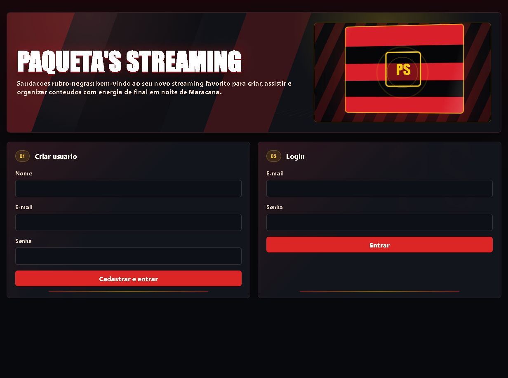
A interface .NET MAUI funciona como apoio para criadores e administradores, sendo adequada para operacoes de cadastro, upload, organizacao do acervo e acompanhamento de desempenho. Por estar integrada a mesma API utilizada pelo aplicativo Android, as informacoes cadastradas pelo criador podem ser consumidas no aplicativo mobile.
| Aba | Funcao | Endpoints consumidos |
|---|---|---|
| Metricas | Mostra totais de usuarios, criadores, conteudos, midias prontas, tipos de midia, playlists e desempenho por criador. | GET /api/usuarios GET /api/criadores GET /api/conteudos GET /api/playlists |
| Player | Reproduz video, musica ou podcast e mostra historico local vinculado ao usuario logado. | GET /api/conteudos/{id}/reproducao GET /api/conteudos/{id}/stream |
| Cine | Lista videos em formato de vitrine, com filtros por texto, criador e disponibilidade. | GET /api/conteudos GET /api/criadores |
| Conteudos | Cria conteudos com upload, edita metadados e remove registros. | POST /api/conteudos PUT /api/conteudos/{id} DELETE /api/conteudos/{id} |
| Playlists | Cria playlists, edita dados e adiciona conteudos por ItemPlaylist. | GET /api/playlists POST /api/playlists POST /api/playlists/{id}/itens |
| Criadores | Cadastro, edicao e exclusao dos criadores responsaveis pelos conteudos. | GET/POST/PUT/DELETE /api/criadores |
| Usuarios | Gerenciamento dos usuarios cadastrados, sem expor senha ou hash. | GET/POST/PUT/DELETE /api/usuarios |
O contrato de requisição utilizado pela interface .NET MAUI foi descrito no desenvolvimento sem inserir blocos de código soltos no corpo do relatório. O painel centraliza as chamadas HTTP, envia o token Bearer recebido no login e trata respostas não autorizadas para manter a sessão do usuário consistente.
As figuras a seguir demonstram as principais telas da interface .NET MAUI apos autenticacao. Todas consomem a mesma API e compartilham o estado da sessao do usuario autenticado.
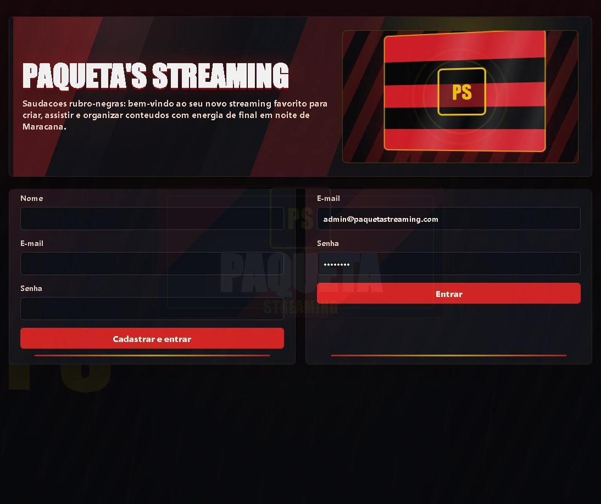
A tela de metricas evidencia a analise de desempenho solicitada no manual, mostrando totais de catalogo, prontidao das midias, distribuicao por tipo e desempenho por criador.
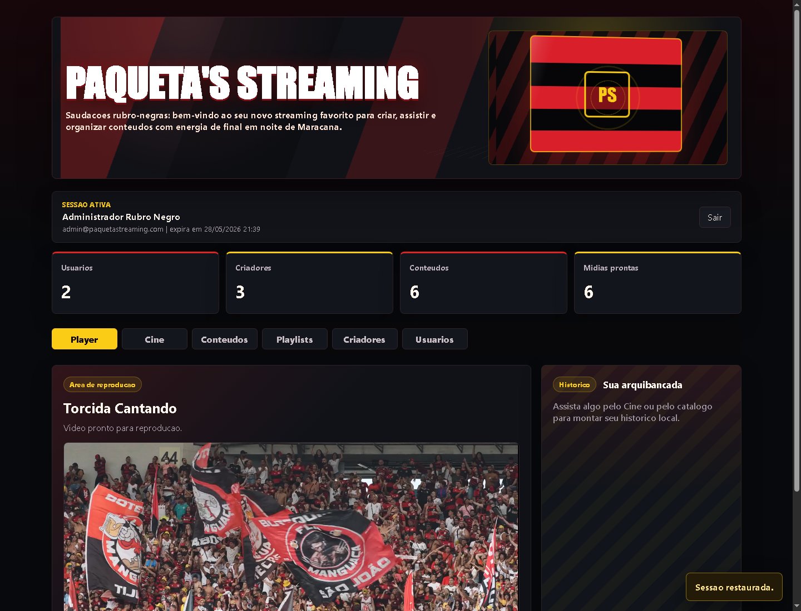
Esta tela centraliza a reprodução de vídeos, músicas e podcasts. O painel lateral apresenta o histórico do usuário logado, permitindo voltar rapidamente a conteúdos assistidos e editar o item pela interface do criador.

A tela Cine funciona como vitrine de streaming: lista os vídeos cadastrados, permite filtro por criador e disponibilidade, e oferece acesso direto ao player para iniciar a reprodução.

Nesta tela o criador ou administrador cadastra novas mídias, informa título, tipo, criador responsável e envia o arquivo para a API usando multipart/form-data.

A tela Playlists demonstra a relação entre usuário, playlist e conteúdos por meio da entidade ItemPlaylist, permitindo organizar o consumo dentro da plataforma.
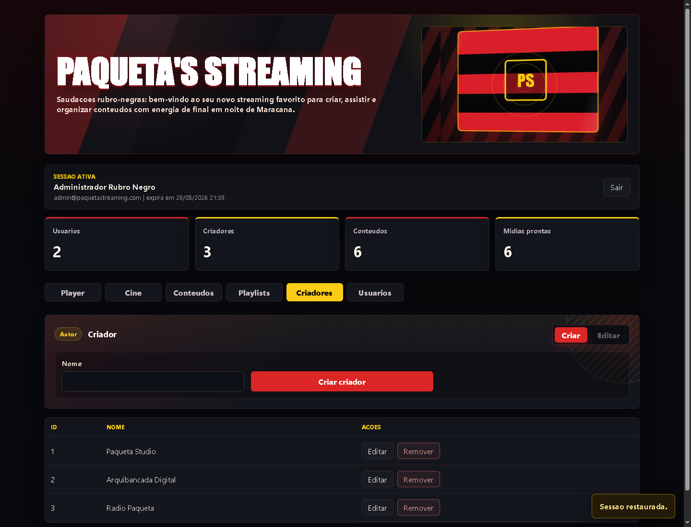
A tela de Criadores mantém os responsáveis pela produção ou publicação dos conteúdos, servindo como base para associar cada mídia a seu autor.
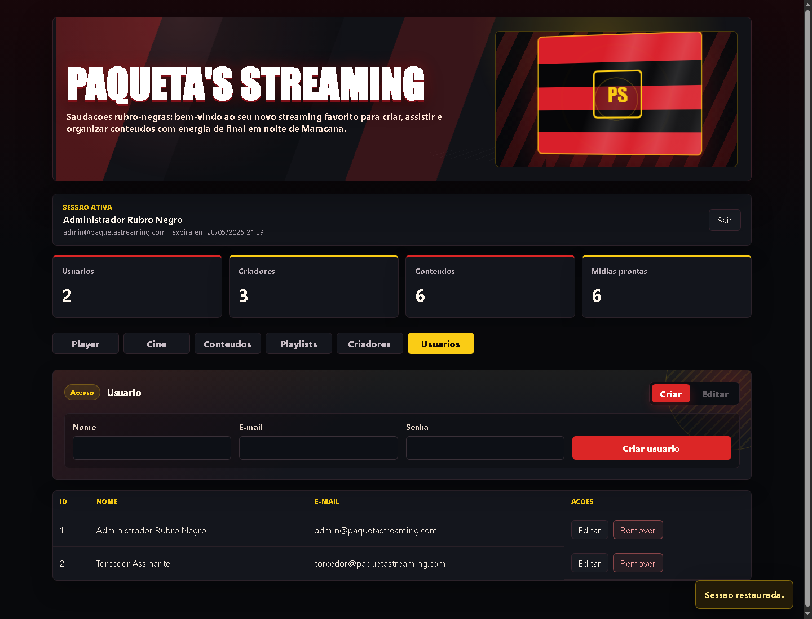
A página de Usuários evidencia o CRUD administrativo sem exibir senha ou hash, preservando a regra de segurança definida para a API.
O aplicativo Android foi desenvolvido em Java e representa a interface do usuario final. Ele possui tela de abertura com identidade visual, fluxo de login e cadastro, catalogo de conteudos, player multimidia, playlists, perfil e area de interacao social. A proposta atende ao requisito de permitir navegacao, consumo de conteudo e interacao dentro da plataforma.

A abertura apresenta a identidade visual da plataforma e prepara a experiência do usuário final antes do acesso ao catálogo.

O catálogo mobile consome a API para listar vídeos, músicas e podcasts disponíveis, exibindo ações de assistir e organizar em playlists.
O player do Android foi ajustado para reproduzir videos, musicas e podcasts usando as URLs retornadas pela API. Para videos, o aplicativo utiliza um componente WebView com player HTML5, evitando falhas de compatibilidade observadas no componente nativo. O historico de consumo e separado por usuario, de modo que um login diferente nao reutiliza o historico visualizado por outro usuario na mesma maquina.
A interacao social foi evidenciada no fluxo do usuario final por meio de comentarios e curtidas associados ao conteudo em reproducao. Dessa forma, o aplicativo nao se limita a navegar e assistir midias: ele tambem permite que o usuario registre opiniao, visualize a area de comentarios e demonstre engajamento com o conteudo, aproximando o prototipo do comportamento esperado em uma plataforma de streaming.

O player utiliza a URL de stream da API e mantém comentários e curtidas como interação social do usuário final.

A tela de playlists mostra as coleções vinculadas ao usuário, permitindo organizar os conteúdos consumidos na plataforma.

O perfil resume a sessão do usuário e oferece acesso às informações essenciais da conta no aplicativo mobile.
No aplicativo Android, a configuração de acesso à API local foi validada durante os testes em emulador. O redirecionamento de porta permitiu que o endereço local do ambiente de desenvolvimento acessasse o backend ASP.NET Core em execução no computador.
O banco de dados SQLite foi populado com usuarios, criadores, playlists e arquivos de midia existentes na pasta raiz do projeto. Essa carga inicial permite demonstrar o funcionamento do sistema imediatamente apos a execucao da API, facilitando a validacao das telas .NET MAUI e Android.
| Tipo | Registro | Observacao |
|---|---|---|
| Usuario | Administrador Rubro Negro | Email: admin@paquetastreaming.com |
| Usuario | Torcedor Assinante | Email: torcedor@paquetastreaming.com |
| Criador | Paqueta Studio | Criador utilizado na carga de videos. |
| Criador | Arquibancada Digital | Criador utilizado na carga de conteudos musicais. |
| Criador | Radio Paqueta | Criador utilizado na carga de podcast. |
| Arquivo de midia | Tipo cadastrado | Origem |
|---|---|---|
| documentario-plataforma.mp4 | video | projeto |
| tutorial-experiencia-digital.mp4 | video | projeto |
| podcast-inovacao-semanal.mp4 | podcast | projeto |
| trilha-abertura.mp3 | musica | projeto |
| tema-institucional.mp3 | musica | projeto |
| vinheta-encerramento.mp3 | musica | projeto |
As evidencias do projeto foram organizadas por modulo. As capturas de tela demonstram o funcionamento das principais interfaces e auxiliam a comprovacao visual do sistema para a entrega academica. Os links abaixo indicam o repositorio principal e os diretorios relacionados a cada parte da solucao.
Repositorio principal: https://github.com/MADUOL5/Pim8Unip
API: https://github.com/MADUOL5/Pim8Unip/tree/main/backend/StreamingAPI
Interface .NET MAUI: https://github.com/MADUOL5/Pim8Unip/tree/main/app/ContentCreatorApp
Aplicativo Android: https://github.com/MADUOL5/Pim8Unip/tree/main/app/ContentCreatorApp/AndroidUserApp
Relatorio HTML: https://github.com/MADUOL5/Pim8Unip/tree/main/app/ContentCreatorApp/RelatorioPIM
A estrutura do repositório foi organizada em três partes principais e uma área própria para o relatório acadêmico:
As capturas a seguir apresentam janelas reais do Visual Studio Code com trechos do código-fonte produzido no projeto. Elas substituem blocos de código escritos diretamente no relatório e servem como evidência técnica da Web API, da autenticação JWT, do repositório de playlists, da interface .NET MAUI e do aplicativo Android Java, conforme solicitado para a documentação do PIM.
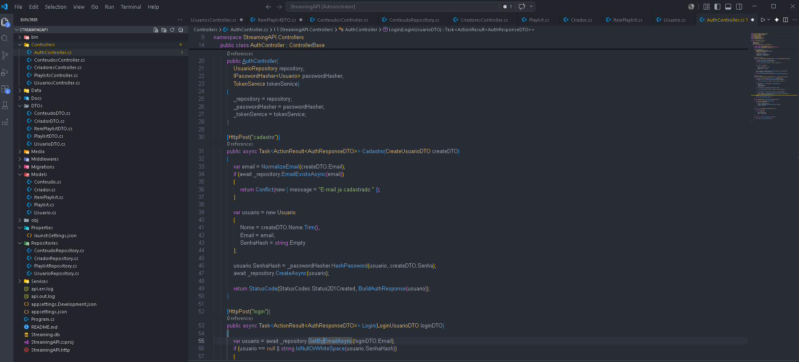
O AuthController comprova a implementação do cadastro e login, usando hash de senha e retorno de token JWT para acesso às rotas protegidas.
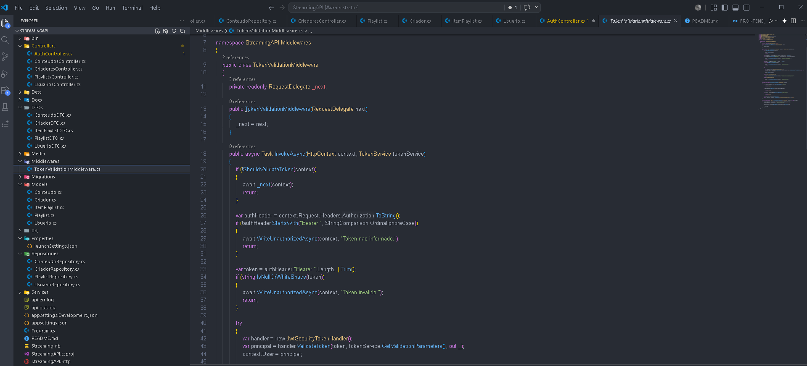
O middleware valida o cabeçalho Authorization, ignora rotas públicas como autenticação e documentação e retorna 401 quando o token está ausente, inválido ou expirado.
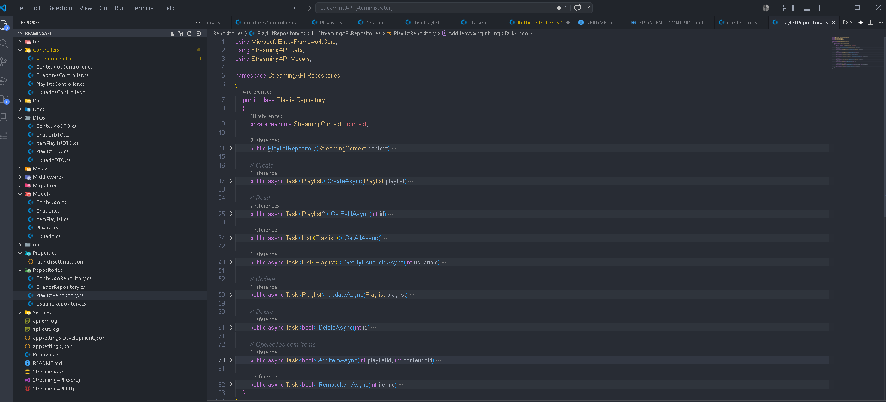
O PlaylistRepository concentra a lógica de acesso ao banco para criação, consulta, atualização, exclusão e associação de conteúdos às playlists.
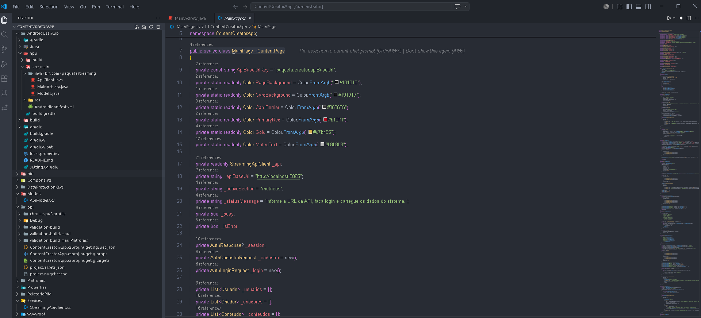
O arquivo MainPage.cs evidencia a construção da interface do criador de conteúdos em .NET MAUI, incluindo estado da sessão, URL da API, cores da interface e listas carregadas pelo sistema.
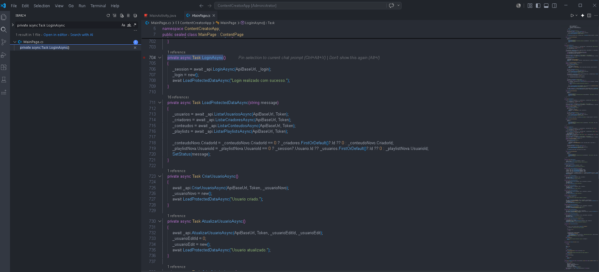
A captura mostra o método de login e a carga de usuários, criadores, conteúdos e playlists após a autenticação, demonstrando o consumo da API com dados protegidos.
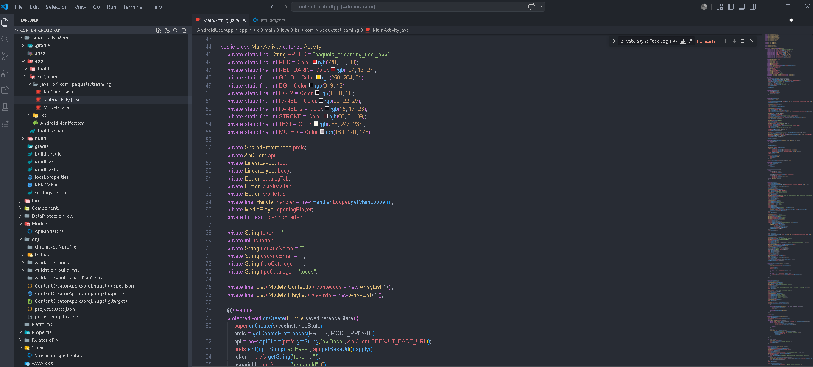
O arquivo MainActivity.java evidencia a implementação mobile em Java, com preferências locais, cliente de API, controles de navegação, sessão do usuário e preparação das telas do aplicativo.
O desenvolvimento do sistema de streaming de conteudo multimidia permitiu aplicar, de forma integrada, conhecimentos de programacao orientada a objetos, desenvolvimento para internet e desenvolvimento mobile. A Web API centralizou a logica de dados e seguranca, enquanto a interface .NET MAUI e o aplicativo Android demonstraram formas distintas de consumir os mesmos recursos.
A implementacao de autenticacao por JWT, senha com hash, CRUDs, upload de arquivos, playlists, metricas do criador e player de streaming contribuiu para aproximar o prototipo de um sistema real. A interface .NET MAUI atende ao uso administrativo e de criadores, enquanto o aplicativo Android atende ao usuario final, permitindo navegacao, reproducao, comentarios e curtidas.
Como resultado, o projeto cumpre a proposta do PIM VIII ao apresentar uma solucao funcional, documentada e organizada, com evidencias visuais e estrutura adequada para evolucao futura. Entre as melhorias possiveis estao a publicacao em ambiente cloud, criacao de testes automatizados mais completos, integracao com servico externo de armazenamento de midias e ampliacao dos recursos sociais da plataforma.
ASSOCIAÇÃO BRASILEIRA DE NORMAS TÉCNICAS. NBR 14724: informacao e documentacao: trabalhos academicos: apresentacao. Rio de Janeiro: ABNT.
DEITEL, Paul; DEITEL, Harvey. C#: como programar. Sao Paulo: Pearson.
FIELDING, Roy Thomas. Architectural styles and the design of network-based software architectures. Irvine: University of California, 2000.
FOWLER, Martin. Patterns of enterprise application architecture. Boston: Addison-Wesley, 2002.
GAMMA, Erich; HELM, Richard; JOHNSON, Ralph; VLISSIDES, John. Design patterns: elements of reusable object-oriented software. Boston: Addison-Wesley, 1995.
PRESSMAN, Roger S.; MAXIM, Bruce R. Engenharia de software: uma abordagem profissional. Porto Alegre: AMGH.
RICHARDSON, Leonard; RUBY, Sam. RESTful web services. Sebastopol: O'Reilly, 2007.
GOOGLE. Android Developers Documentation. Disponivel em: https://developer.android.com/docs. Acesso em: 28 maio 2026.
MICROSOFT. ASP.NET Core documentation. Disponivel em: https://learn.microsoft.com/aspnet/core. Acesso em: 28 maio 2026.
MICROSOFT. Entity Framework Core documentation. Disponivel em: https://learn.microsoft.com/ef/core. Acesso em: 28 maio 2026.
MICROSOFT. .NET MAUI documentation. Disponivel em: https://learn.microsoft.com/dotnet/maui. Acesso em: 28 maio 2026.
MICROSOFT. JSON Web Token authentication in ASP.NET Core. Disponivel em: https://learn.microsoft.com/aspnet/core/security/authentication. Acesso em: 28 maio 2026.
UNIVERSIDADE PAULISTA. Manual do PIM VIII: Curso Superior de Tecnologia em Analise e Desenvolvimento de Sistemas. Sao Paulo: UNIP EaD.